library(tidyverse)1 Распределения
1.1 Распределения в R
В R встроено какое-то количество известных распределений. Все они представлены четырьмя функциями:
d...(функция плотности, probability density function),p...(функция распределения, cumulative distribution function) — интеграл площади под кривой от начала до указанной квантилиq...(обратная функции распределения, inverse cumulative distribution function) — значение p-той квантили распределения- и
r...(рандомные числа из заданного распределения).
Рассмотрим все это на примере нормального распределения.
tibble(x = 1:100,
PDF = dnorm(x = x, mean = 50, sd = 10)) |>
ggplot(aes(x, PDF))+
geom_point()+
geom_line()+
labs(title = "PDF нормального распределения (μ = 50, sd = 10)")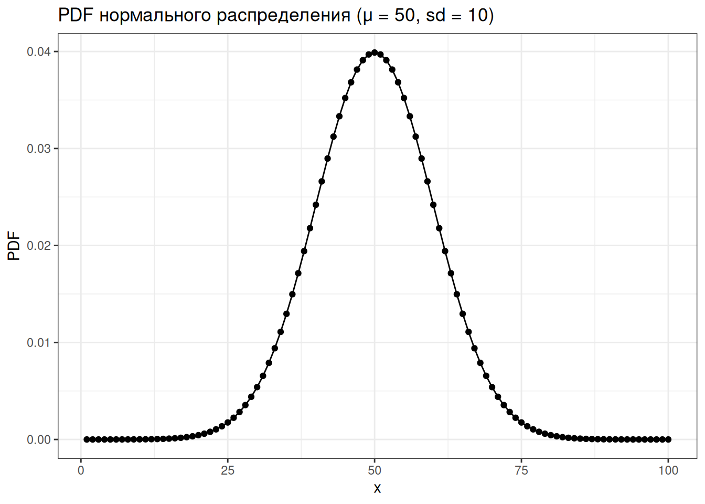
tibble(x = 1:100,
CDF = pnorm(x, mean = 50, sd = 10)) |>
ggplot(aes(x, CDF))+
geom_point()+
geom_line()+
labs(title = "CDF нормального распределения (μ = 50, sd = 10)")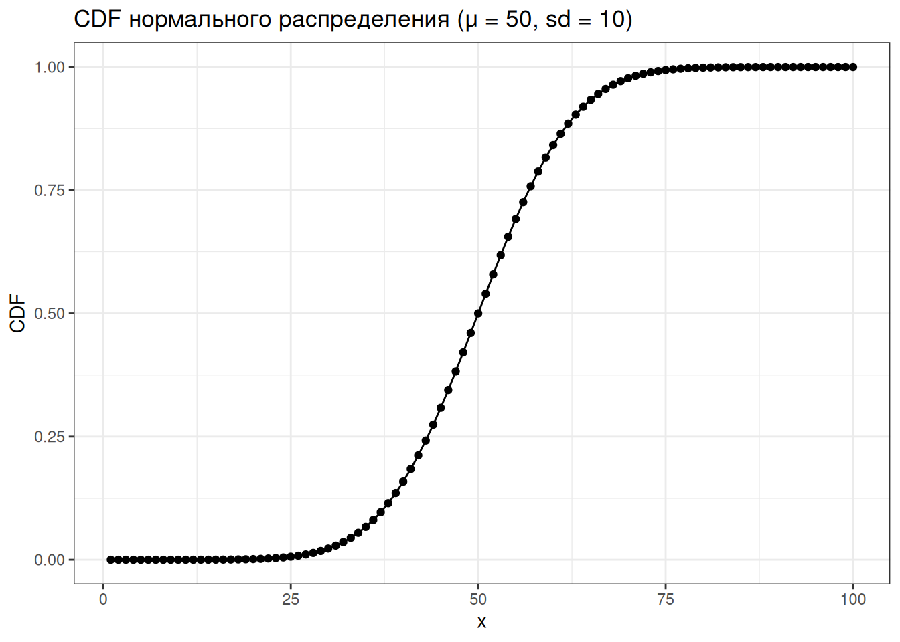
tibble(quantiles = seq(0, 1, by = 0.01),
value = qnorm(quantiles, mean = 50, sd = 10)) |>
ggplot(aes(quantiles, value))+
geom_point()+
geom_line()+
labs(title = "inverse CDF нормального распределения (μ = 50, sd = 10)")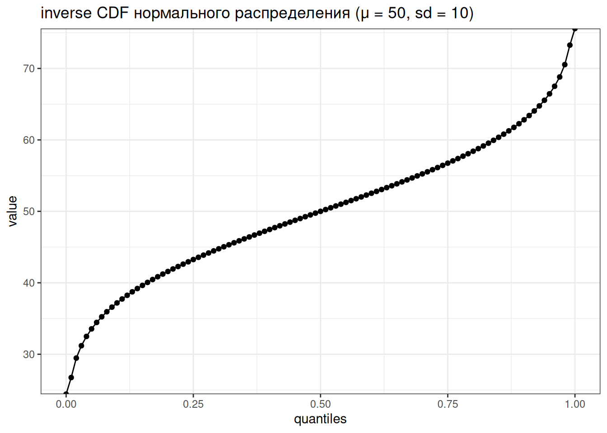
tibble(sample = rnorm(100, mean = 50, sd = 10)) |>
ggplot(aes(sample))+
geom_histogram()+
labs(title = "выборка нормально распределенных чисел (μ = 50, sd = 10)")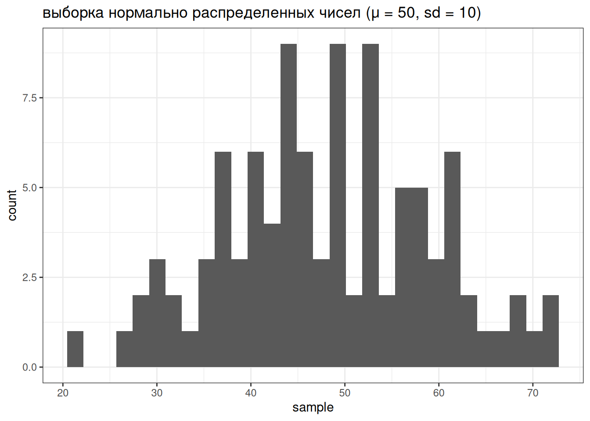
Если не использовать set.seed(), то результат работы рандомизатора нельзя будет повторить.
ответы:
недостаток 1
недостаток 2
1.2 Дискретные переменные
1.2.1 Биномиальное распределение
Биномиальное распределение — распределение количетсва успехов эксперементов Бернулли из n попыток с вероятностью успеха p.
\[P(k | n, p) = \frac{n!}{k!(n-k)!} \times p^k \times (1-p)^{n-k} = {n \choose k} \times p^k \times (1-p)^{n-k}\] \[ 0 \leq p \leq 1; n, k > 0\]
tibble(x = 0:50,
density = dbinom(x = x, size = 50, prob = 0.16)) |>
ggplot(aes(x, density))+
geom_point()+
geom_line()+
labs(title = "Биномиальное распределение p = 0.16, n = 50")
1.2.2 Геометрическое распределение
Геометрическое распределение — распределение количетсва эксперементов Бернулли с вероятностью успеха p до первого успеха.
\[P(k | p) = (1-p)^k\times p\] \[k\in\{1, 2, \dots\}\]
tibble(x = 0:50,
density = dgeom(x = x, prob = 0.16)) |>
ggplot(aes(x, density))+
geom_point()+
geom_line()+
labs(title = "Геометрическое распределение p = 0.16, n = 50")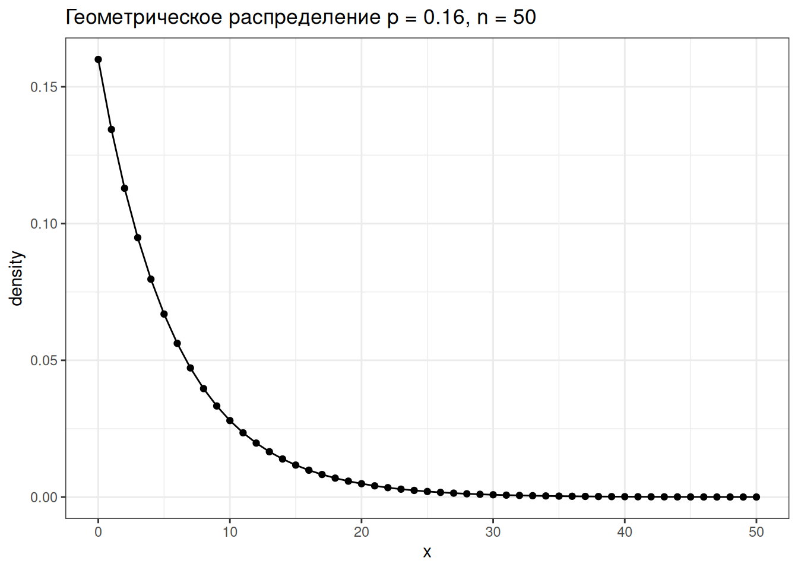
1.2.3 Распределение Пуассона
Распределение дискретной переменной, обозначающей количество случаев \(k\) некоторого события, которое происходит с некоторой заданной частотой \(\lambda\).
\[P(\lambda) = \frac{e^{-\lambda}\times\lambda^k}{k!}\]
tibble(k = 0:50,
density = dpois(x = k, lambda = 5)) |>
ggplot(aes(k, density))+
geom_point()+
geom_line()+
labs(title = "Распределение Пуассона с параметром λ = 5")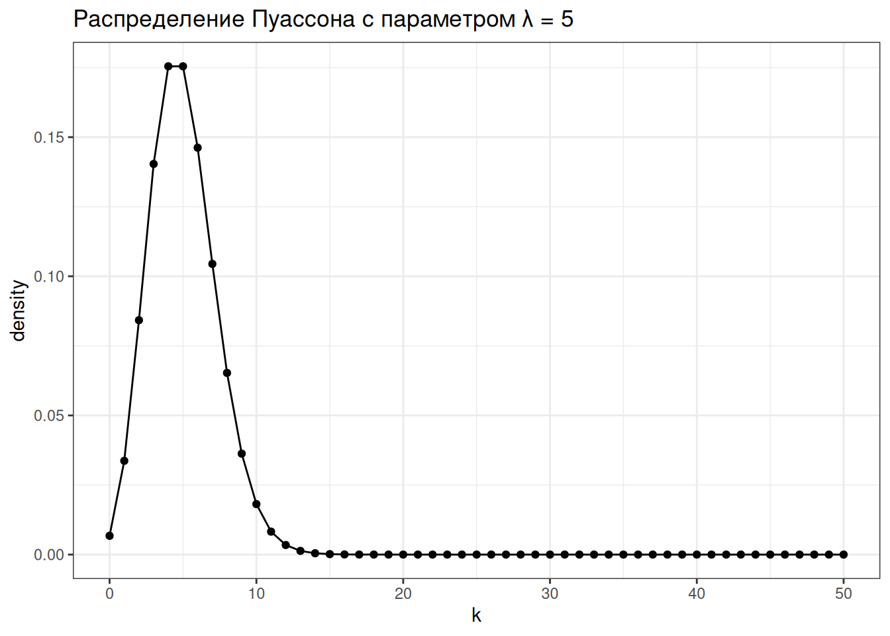
Параметр \(\lambda\) в модели Пуассона одновременно является и средним, и дисперсией.
Попробуем воспользоваться распределением Пуассона для моделирования количества слогов в андийском языке. Количество слогов – это всегда натуральное число (т. е. не бывает 2.5 слогов, не бывает -3 слогов и т. д., но в теории может быть 0 слогов), так что модель Пуассона здесь применима. Согласно модели Пуассона все слова независимо друг от друга получают сколько-то слогов согласно распределению Пуассона. Посмотрим на данные:
andic_syllables <- read_csv("https://raw.githubusercontent.com/agricolamz/2021_da4l/master/data/andic_syllables.csv")
andic_syllables |>
ggplot(aes(n_syllables, count))+
geom_col()+
facet_wrap(~language, scales = "free")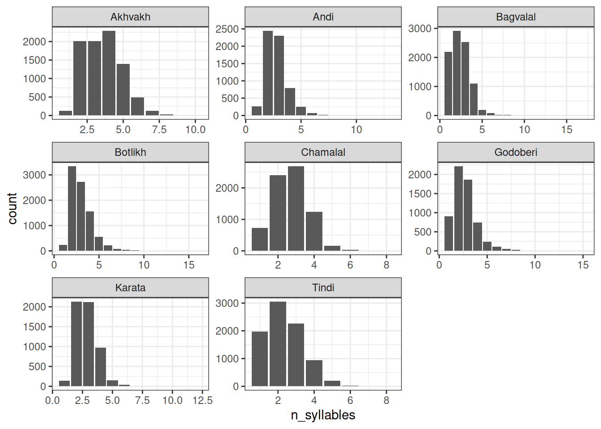
Птичка напела (мы научимся узнавать, откуда птичка это знает на следующем занятии), что андийские данные можно описать при помощи распределения Пуассона с параметром \(\lambda\) = 2.783.
andic_syllables |>
filter(language == "Andi") |>
rename(observed = count) |>
mutate(predicted = dpois(n_syllables, lambda = 2.783)*sum(observed)) |>
pivot_longer(names_to = "type", values_to = "value", cols = c(observed, predicted)) |>
ggplot(aes(n_syllables, value, fill = type))+
geom_col(position = "dodge")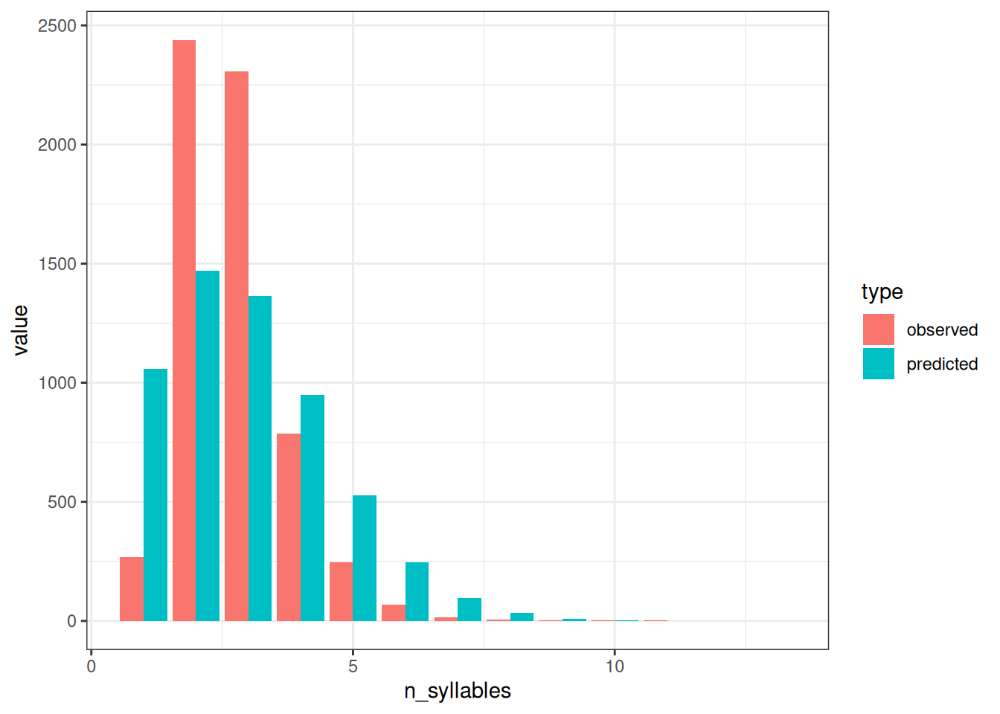
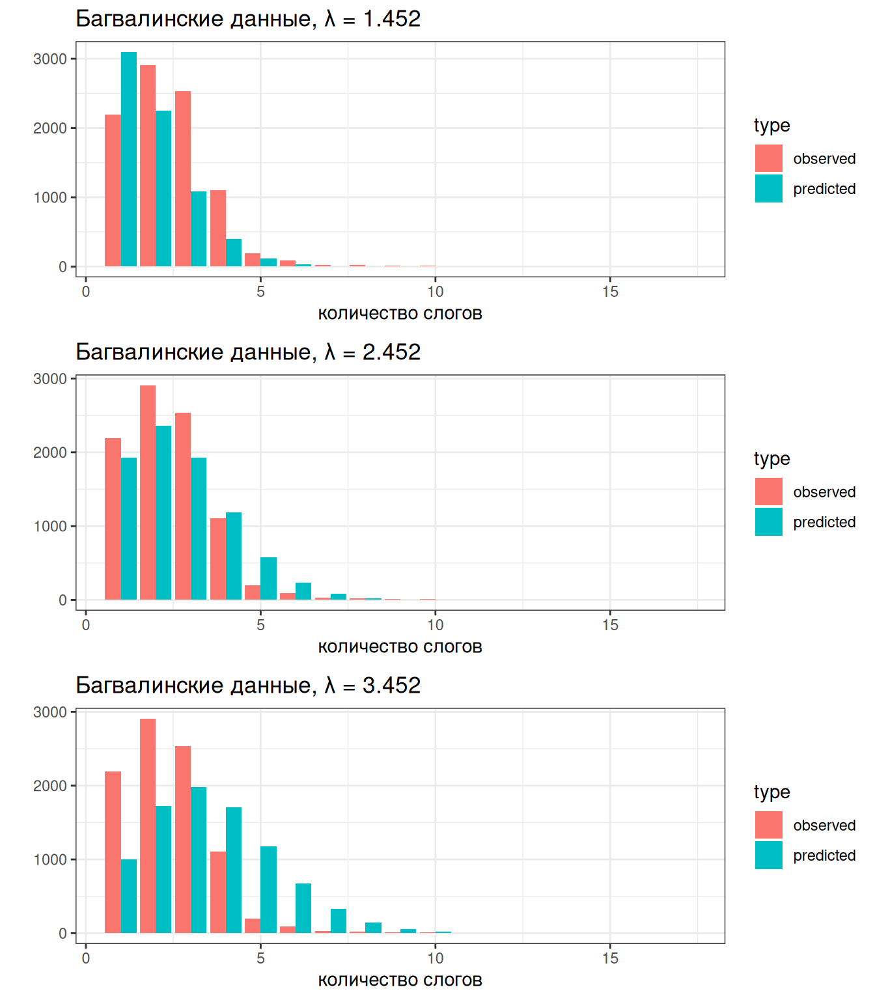
1.3 Числовые переменные
1.3.1 Нормальное распределение
\[P(x) = \frac{1}{\sqrt{2\pi\sigma^2}}\times e^{-\frac{\left(x-\mu\right)^2}{2\sigma^2}}\]
\[\mu \in \mathbb{R}; \sigma^2 > 0\]
tibble(x = 1:100,
PDF = dnorm(x = x, mean = 50, sd = 10)) |>
ggplot(aes(x, PDF))+
geom_point()+
geom_line()+
labs(title = "PDF нормального распределения (μ = 50, sd = 10)")
Птичка напела, что длительность гласных американского английского из (Hillenbrand et al. 1995) можно описать нормальным распределением с параметрами \(\mu =\) 274.673 и \(\sigma =\) 64.482. Посмотрим, как можно совместить данные и это распределение:
vowels <- read_csv("https://raw.githubusercontent.com/agricolamz/2024_HSE_b_da4l/main/data/phonTools_hillenbrand_1995.csv")
vowels |>
ggplot(aes(dur)) +
geom_histogram(aes(y = after_stat(density))) + # обратите внимание на аргумент after_stat(density)
stat_function(fun = dnorm, args = list(mean = 274.673, sd = 64.482), color = "red")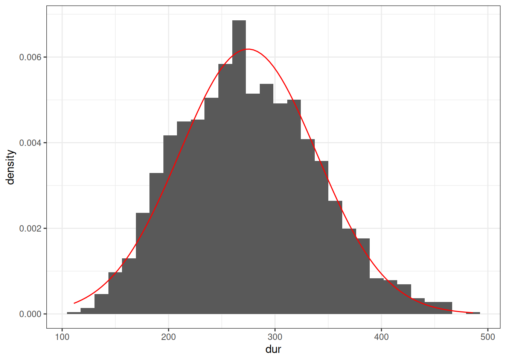
1.3.2 Логнормальное распределение
\[P(x) = \frac{1}{x\sqrt{2\pi\sigma^2}}\times e^{-\frac{\left(\ln x-\mu\right)^2}{2\sigma^2}}\]
\[\mu \in \mathbb{R}; \sigma^2 > 0\]
tibble(x = 1:100,
PDF = dlnorm(x = x, mean = 3, sd = 0.5)) |>
ggplot(aes(x, PDF))+
geom_point()+
geom_line()+
labs(title = "PDF логнормального распределения (μ = 3, σ = 0.5)")
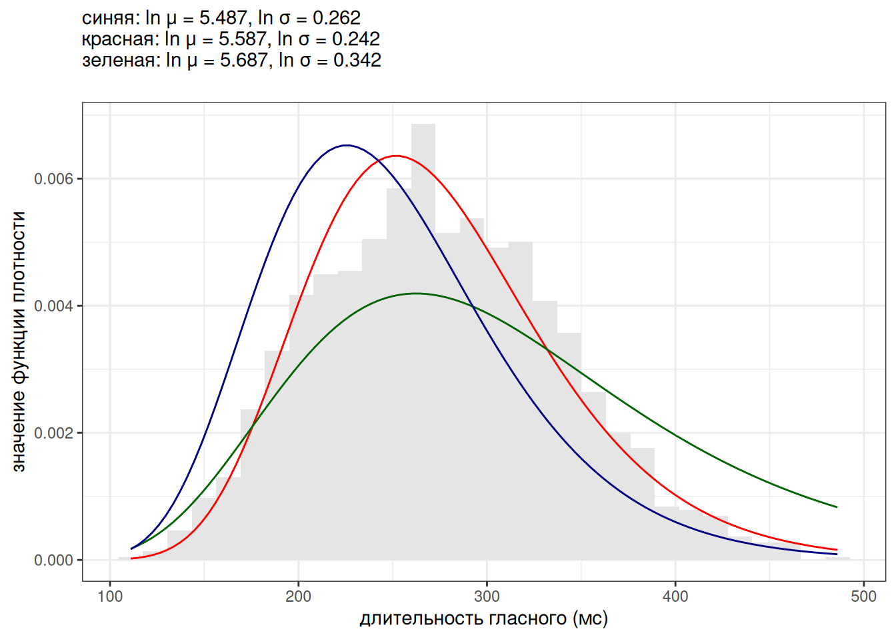
1.3.3 Что еще почитать про распределения?
Люди придумали очень много разных распределений. Стоит, наверное, также понимать, что распределения не существуют отдельно в вакууме: многие из них математически связаны друг с другом. Про это можно посмотреть вот здесь или здесь.
Hillenbrand, James, Laura A Getty, Michael J Clark, and Kimberlee Wheeler. 1995. “Acoustic Characteristics of American English Vowels.” The Journal of the Acoustical Society of America 97 (5): 3099–3111.
Moran, Steven, Daniel McCloy, and Richard Wright, eds. 2014. PHOIBLE Online. Leipzig: Max Planck Institute for Evolutionary Anthropology. https://phoible.org/.
Rosenbach, Anette. 2003. “Aspects of Iconicity and Economy in the Choice Between the s-Genitive and the of-Genitive in English.” In Determinants of Grammatical Variation in English, edited by Günter Rohdenburg and Britta Mondorf. Berlin, New York: Mouton de Gruyter.